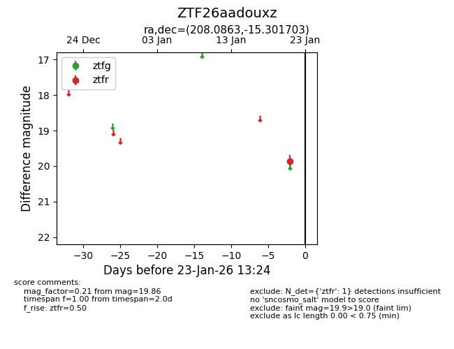
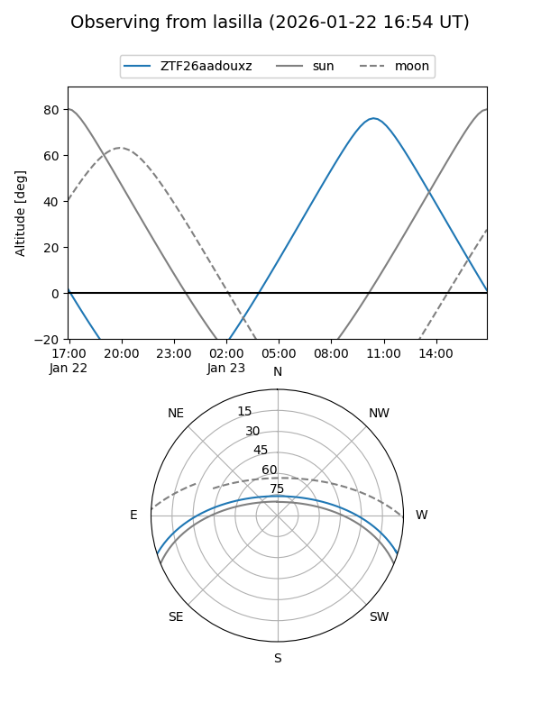
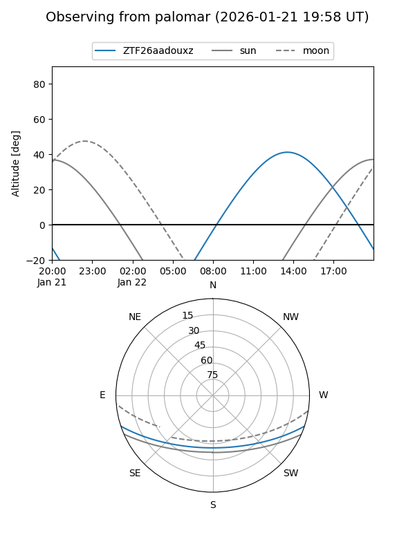

ZTF26aadouxz
Target ZTF26aadouxz at 2026-01-21 13:21
Aliases and brokers:
FINK: link
Lasair: link
ALeRCE: link
alt names
ZTF26aadouxz (ztf,fink_ztf)
Coordinates:
equatorial (ra, dec) = 208.0863,-15.30170
equatorial (HMS+DMS) = 13:52:20.72,-15:18:06.13
galactic (l, b) = (323.9523,+45.06966)
Flags:
Photometry:
last ztfr=19.86
1 ztfr detections
Lightcurve

Visibility


Additional plots